// Lo Studio
Sezione 00. L'amico che ha letto un articoloTutti ne conosciamo uno. Quello che a cena tira fuori il telefono e dice: "ho letto uno studio, dice che se avessimo tutti l'auto elettrica non ci sarebbero problemi."
Lo studio esiste davvero. Ce ne sono diversi, e dicono tutti piu' o meno la stessa cosa: il fabbisogno energetico aggiuntivo sarebbe gestibile, intorno al 20-25% della produzione attuale. Che e' vero. Ma non e' la domanda giusta.
Quegli studi parlano di energia. Quanti TWh servono all'anno. Una grandezza annua, liscia, media. E su quella hanno ragione: 74 TWh in piu' su 312 non sono un dramma. Ce la fai.
Ma l'energia e' solo meta' della storia. L'altra meta' si chiama potenza. La potenza non si media: si picca. E' il momento preciso in cui 28 milioni di persone tornano a casa, attaccano la wallbox, e chiedono 7.4 kW ciascuna. Nello stesso quarto d'ora.
La differenza tra energia e potenza e' la differenza tra sapere che quest'anno pioveranno 800 mm di pioggia e averli tutti in un pomeriggio. Il volume d'acqua e' lo stesso. Il risultato no.
Premessa. Questo articolo non e' contro l'auto elettrica. E' contro l'idea che la transizione sia un non-problema. I numeri dicono che si puo' fare, ma il costo e la complessita' infrastrutturale sono enormi. Chi dice "basta la corrente che gia' abbiamo" non ha fatto i conti. Li facciamo noi.
// L'Energia: Il Problema Facile
Sezione 01. 74 TWh in piu', e fin qui siamo d'accordoPartiamo dai numeri. Sono tutti pubblici e verificabili.
(ACI 2025)
(ISTAT 2025)
(consumo reale EV)
(fabbisogno IT, Terna)
Il conto e' elementare:
Il 24% del fabbisogno attuale. Tanto? Si'. Impossibile? No. Con 34 GW di fotovoltaico e 10 GW di eolico aggiuntivo lo tiri fuori. Il punto non e' qui. Il punto e' che questo numero ti da' un falso senso di sicurezza. 74 TWh spalmati su un anno sono una cosa. 74 TWh concentrati tra le 18 e le 21 sono un'altra.
// La Potenza: Il Muro
Sezione 02. Non quanta energia, ma quanta tutta insiemeEcco la variabile che gli studi ficcano in nota a pie' di pagina. La potenza non si media, si picca. E il picco dipende da quando la gente carica.
Il modello di ricarica:
- Ogni auto arriva a casa secondo una distribuzione normale: media 18:30, deviazione standard 1.5 ore
- Chi arriva attacca subito (niente smart charging, scenario "dumb")
- Consumo giornaliero medio: 5 kWh (28 km × 18 kWh/100km)
- Wallbox: 7.4 kW (monofase 32A, la piu' comune)
- Durata ricarica media: ~41 minuti
- Frazione che carica ogni giorno: 70%
Il profilo risultante, sovrapposto al carico base italiano (dati Terna), e' questo:
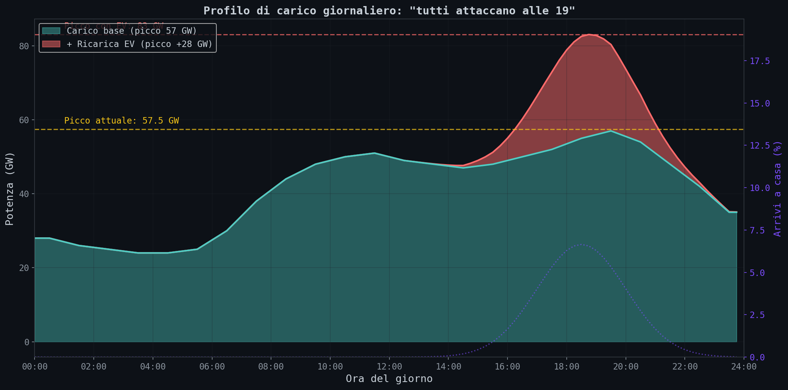
Il picco EV arriva a +27.6 GW e si piazza esattamente sopra il picco serale della rete. Totale: 84.6 GW. Oggi il record e' 57.5 GW (18 luglio 2024, ore 15-16, Terna). Un +47% di potenza di picco. Sul punto piu' fragile della giornata.
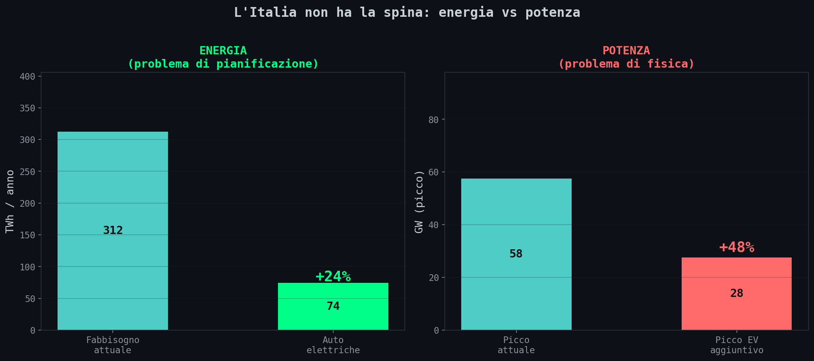
Tradotto. Lo "studio" del tuo amico parla della barra verde a sinistra: +24%, gestibile. Il problema reale e' la barra rossa a destra: +47% di picco. L'energia e' un problema di pianificazione. La potenza e' un problema di fisica. La fisica non aspetta.
Qualcuno dira': "nessuno carica tutti insieme." Corretto. Il grafico sopra e' un bound superiore. Ma il bound inferiore, carico perfettamente distribuito su 24 ore, e' un'utopia altrettanto irrealistica. Mettiamo i paletti.
Bound superiore: Ppeak = N × pwallbox × factive = 27.6 GW
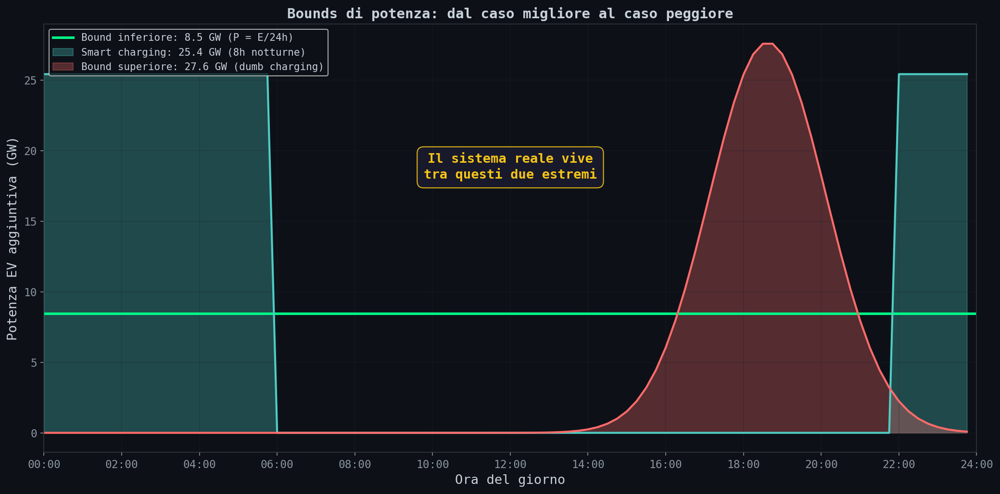
Il sistema reale vivra' tra questi due estremi. Senza coordinamento, tende naturalmente verso il bound superiore: la gente arriva a casa e attacca. La distribuzione degli arrivi non e' un'ipotesi, e' un fatto demografico. Per raggiungere il bound inferiore ti serve un'infrastruttura di controllo che oggi non esiste.
E c'e' una legge fisica da cui non si scappa:
Ridurre il picco senza ridurre l'energia implica allungare il tempo di utilizzo della rete.
Il problema non scompare: si redistribuisce.
Il +47% e' lo scenario peggiore: "dumb charging", tutti attaccano quando arrivano. Con smart charging (la wallbox aspetta le 2 di notte) il picco si dimezza. Con V2G (l'auto restituisce energia alla rete) puoi scendere sotto il picco attuale. Ma servono infrastruttura digitale, protocolli, tariffe dinamiche, e soprattutto che la gente accetti di non decidere quando carica l'auto.
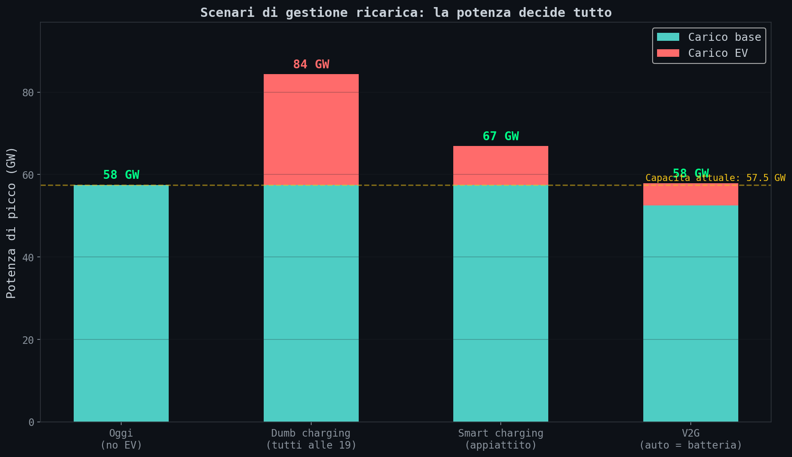
// La Cabina Che Esplode
Sezione 03. Il collo di bottiglia e' nel tuo quartiereOk, fin qui abbiamo ragionato sulla rete nazionale. Ma la rete nazionale non esiste come entita' monolitica. E' una catena di trasformatori. La catena si spezza nell'anello piu' debole. E l'anello piu' debole e' la cabina secondaria MT/BT del tuo quartiere.
Quella scatola grigia per strada con il simbolo del fulmine. Prende la media tensione (20 kV) e la trasforma in bassa tensione (400/230 V) per le case. Ce ne sono 524.000 in Italia (445.000 solo e-distribuzione, l'85% della rete). Ciascuna serve in media 70 utenze.
I numeri di una cabina tipica da 400 kVA:
trasformatore
(cosφ = 0.95)
(70 utenze, kc=0.3)
residuo
317 kW di margine sembrano tanti. Poi aggiungi le wallbox. Una wallbox da 7.4 kW con fattore di contemporaneita' kc = 0.85:
317 kW ÷ (7.4 kW × 0.85) = 50 auto
Cinquanta. Su settanta utenze. Basta che il 71% dei residenti abbia una wallbox e il trasformatore va in sovraccarico.
Obiezione legittima: 7.4 kW e' la potenza nominale della wallbox, ma in Italia la potenza contrattuale domestica e' tipicamente 3-6 kW. Questo riduce il picco istantaneo, pero' allunga la durata della ricarica. L'energia totale resta identica. Il problema si sposta dalla potenza alla congestione temporale. Non sparisce: cambia forma.
Il dato che frega davvero e' il fattore di contemporaneita'. Per il carico domestico tradizionale (lavatrici, forni, condizionatori) kc vale circa 0.3: la gente non usa tutto nello stesso momento. La rete e' dimensionata su quel numero. Per le wallbox kc sale a 0.85: quasi tutti attaccano appena arrivano a casa. Il valore 0.85 rappresenta uno scenario ad alta contemporaneita'; valori inferiori sono possibili con gestione attiva del carico, ma richiedono, di nuovo, smart charging. La rete cosi' com'e' e' stata progettata per un kc che non esiste piu'.
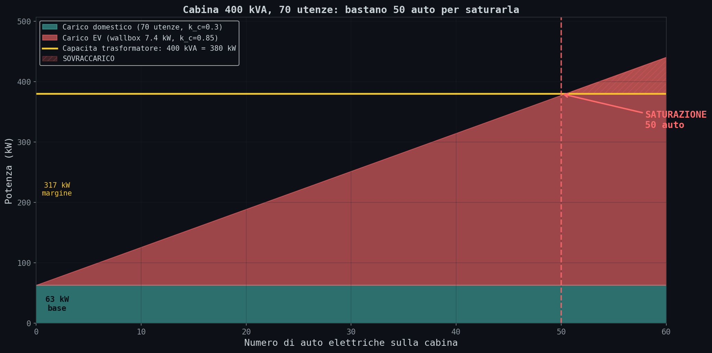
Il grafico mostra la rampa: ogni auto aggiunge 6.3 kW di carico coincidente. A 50 auto la linea gialla viene raggiunta. Ogni auto in piu' e' sovraccarico.
E se la cabina fosse piu' grande? La heatmap sotto mostra il margine residuo per ogni combinazione taglia/penetrazione EV. La linea gialla e' lo zero: sopra sei in sicurezza, sotto sei in sovraccarico.
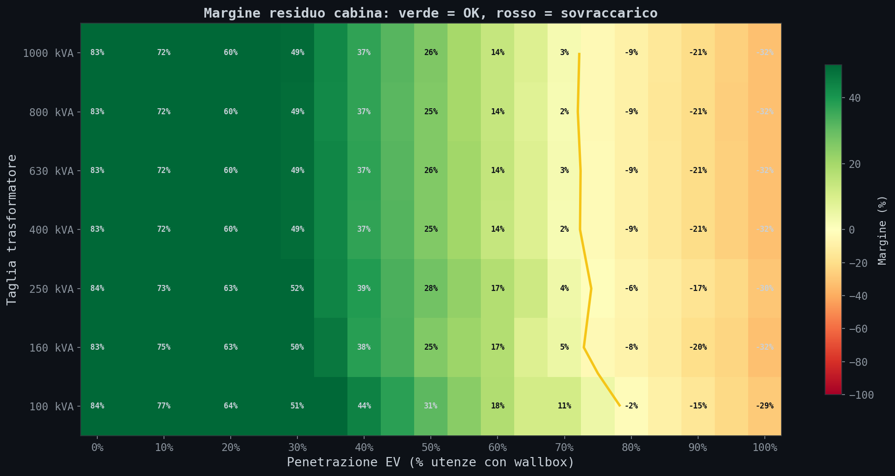
Anche una cabina da 1000 kVA, piu' del doppio della taglia piu' comune, va in rosso sopra l'80% di penetrazione. Con 100% di penetrazione ogni cabina deve servire 108 auto (70 utenze, 1.55 auto/famiglia). Ne regge 50. Servono piu' del doppio delle cabine attuali.
Il conto nazionale. 524.000 cabine, tutte da potenziare. A 80.000 EUR ciascuna (fonte: Phase S.r.l.), sono 42 miliardi di euro. Solo per le cabine. Senza contare i cavi, le linee MT, le stazioni primarie.
// I 50 Hertz
Sezione 04. Il vincolo che non si vede: la stabilita' di frequenzaLa rete elettrica non e' un serbatoio. E' un equilibrio dinamico. In ogni istante la potenza generata deve eguagliare la potenza consumata. Se il carico aumenta di botto, la frequenza cala. Cala troppo? Scattano le protezioni automatiche e intere zone saltano (load shedding).
La velocita' con cui la frequenza reagisce si chiama RoCoF (Rate of Change of Frequency) e dipende dall'inerzia del sistema:
H = inerzia (s), S = potenza sincronizzata (GW), f0 = 50 Hz
H dipende dalle macchine rotanti: turbine a gas, idroelettrico. Roba che gira. I pannelli fotovoltaici e le batterie non hanno inerzia meccanica, non girano. Man mano che le rinnovabili sostituiscono il termoelettrico, H scende. Sistema attuale: H circa 4.5s. Con alta penetrazione rinnovabile: H scende a 2.0s.
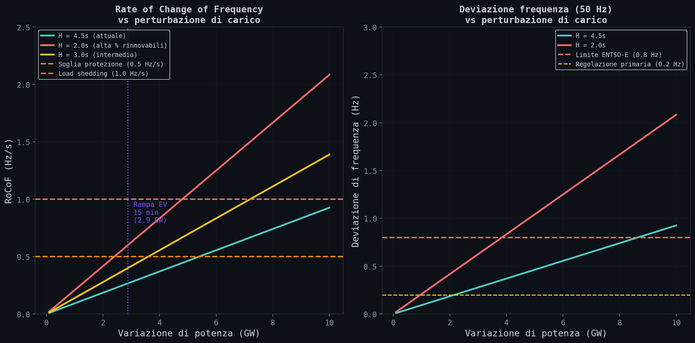
La rampa serale EV, 23 GW in 2 ore, circa 2.9 GW ogni 15 minuti, con H = 2.0s da' un RoCoF stimato nell'ordine di ~0.6 Hz/s. La soglia di protezione e' 0.5 Hz/s. Siamo sopra.
Precisazione importante: questo RoCoF e' una stima upper-bound basata su una rampa aggregata. Nella realta' il sistema e' regolato su scala di secondi tramite riserve primarie e secondarie. Ma il punto resta: l'aumento della rampa di carico erode il margine operativo delle riserve e aumenta la probabilita' di eventi critici. Non e' il singolo RoCoF che ti ammazza. E' l'erosione continua del cuscinetto di sicurezza.
Cambio di livello. Fino alla cabina il problema era infrastrutturale: trasformatori, cavi, colonnine. Qui diventa un problema di stabilita' fisica. Il sistema elettrico non fallisce quando manca energia. Fallisce quando troppa potenza viene richiesta nello stesso punto nello stesso istante.
// La Coda Alla Colonnina
Sezione 05. Erlang-C, e il tempo che esplode anche prima del collassoOk, fin qui abbiamo parlato di chi carica a casa. Ma il 30% del fabbisogno passera' per colonnine pubbliche: chi non ha il garage, chi viaggia, chi ha bisogno di una botta rapida. Quante colonnine servono?
La risposta viene dalla teoria delle code. Stessa matematica dei call center e dei pronto soccorso. Il modello e' M/M/c (Erlang-C): arrivi Poisson, tempi di servizio esponenziali, c colonnine.
La formula chiave:
λ = tasso arrivi, μ = tasso servizio, c = colonnine
Quando ρ si avvicina a 1, il tempo di attesa non cresce linearmente: esplode. E' la stessa curva di Kingman che abbiamo visto nell'articolo sulle code. Il tempo medio di attesa in coda e':
Quando λ → cμ, il denominatore → 0 e Wq → ∞
Il punto che pochi capiscono: non serve arrivare a ρ = 1 per avere un problema. Anche a ρ = 0.85, sistema formalmente stabile, il tempo di attesa e' gia' dieci volte quello a ρ = 0.5. La divergenza e' iperbolica. Non avvisa, non degrada con grazia. Un giorno aspetti 5 minuti, il mese dopo 30, e nei numeri non e' cambiato quasi niente.
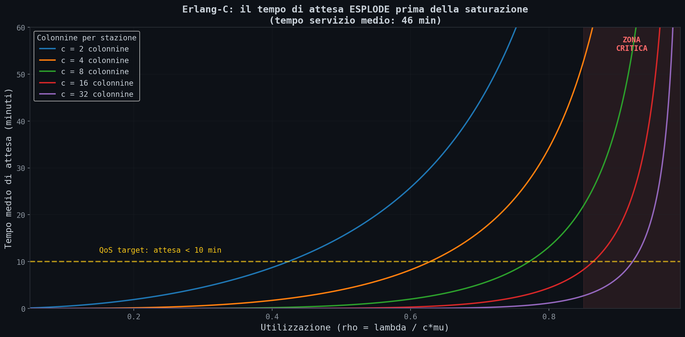
Con 2 colonnine, a ρ = 0.8 aspetti gia' 20 minuti. Con 8 colonnine lo stesso ρ ti da' 5 minuti. Piu' server hai, piu' il sistema e' resiliente ai picchi. Ma ogni server costa.
Adesso facciamo i conti con i numeri italiani. 40.3 milioni di auto, 30% carica in pubblico, consumo giornaliero 5 kWh, sessione pubblica media 25 kWh, tempo di servizio medio 46 minuti (mix DC 50kW/150kW e AC 22kW).
ρ = 2.13. Il sistema e' instabile. Arrivano piu' di due auto per ogni auto servita. La coda cresce all'infinito. Non e' un rallentamento, e' un collasso matematico. Non esiste soluzione di stato stazionario. Il sistema non ha equilibrio.
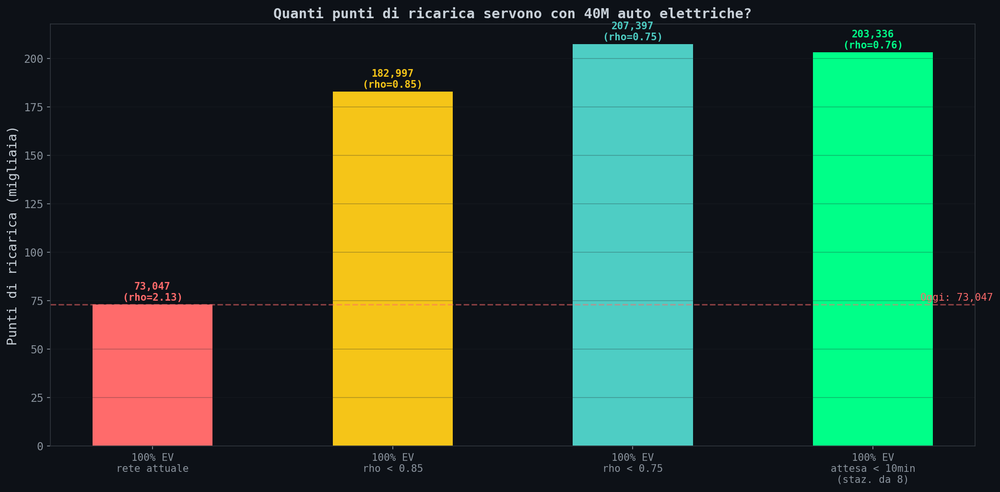
Per portare ρ sotto 0.75 servono almeno ~200.000 punti di ricarica, e questo assumendo distribuzione ideale degli arrivi. Con picchi di pendolarismo e vincoli spaziali il fabbisogno reale e' significativamente superiore. Oggi ne abbiamo 73.000. Servono come minimo il triplo.
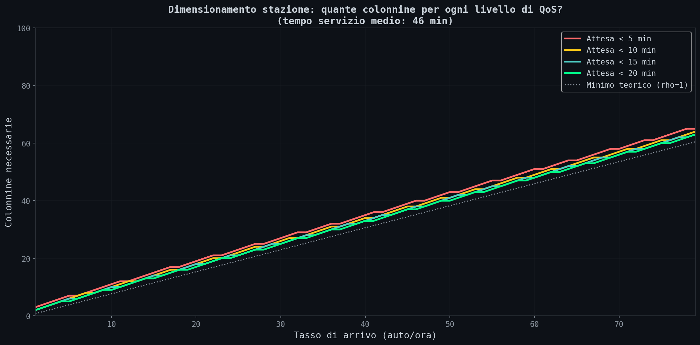
Secondo grafico: quante colonnine per stazione in funzione del tasso di arrivo e del target di attesa. A 20 auto/ora, per stare sotto i 10 minuti servono 18 colonnine. La relazione non e' lineare. E' il prezzo della stabilita'.
Nota per chi vuole attaccare il modello: Erlang-C assume arrivi indipendenti (Poisson). Nella realta' gli arrivi sono correlati. Il pendolarismo crea onde, non gocce. Questo peggiora la congestione rispetto al modello. I numeri qui sono una stima ottimistica.
E poi c'e' un vincolo che Erlang-C non vede: lo spazio fisico. Milano ha circa 6.000-8.000 auto per km². Una stazione da 8 colonnine occupa 150-200 m² tra stalli e accesso. Per servire tutta la citta' con attesa accettabile servono centinaia di stazioni, ognuna in competizione per suolo con parcheggi, marciapiedi, aree verdi. La matematica delle code ti dice quante colonnine servono. L'urbanistica ti dice che non sai dove metterle.
// Il Conto
Sezione 06. 146 miliardi, e non e' nemmeno tuttoTiriamo le somme. Ogni voce ha una fonte, ogni parametro e' nello script, ogni numero lo puoi rifare a casa tua.
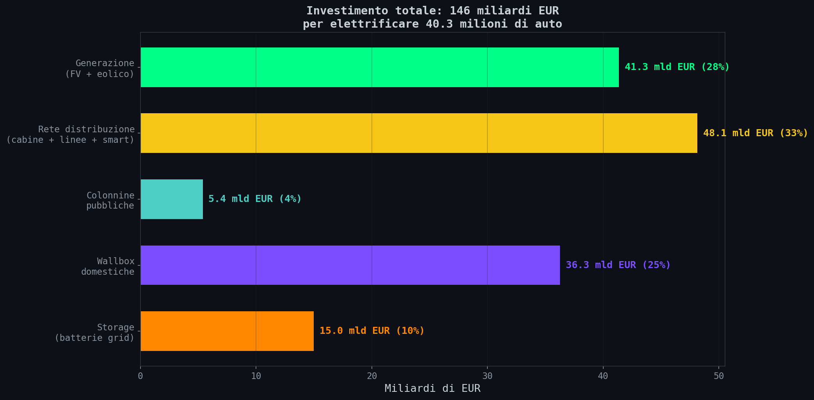
| Voce | Costo | % | Fonte |
|---|---|---|---|
| Generazione (FV + eolico) | 41.3 mld EUR | 28% | Polimi LCOE 2024 |
| Rete distribuzione (cabine + linee + smart grid) | 48.1 mld EUR | 33% | Phase S.r.l., e-distribuzione |
| Wallbox domestiche (24.2M unità) | 36.3 mld EUR | 25% | Ingenio 2025 |
| Storage batterie (15 GW / 60 GWh) | 15.0 mld EUR | 10% | BNEF 2025 |
| Colonnine pubbliche (127k nuove) | 5.4 mld EUR | 4% | MOTUS-E |
| TOTALE | ~146 mld EUR | 100% |
Ordine di grandezza: 100-200 miliardi di euro. Scenario base: ~146 miliardi. Circa il 7% del PIL italiano. Piu' del ponte sullo Stretto moltiplicato per venti. Circa 3.600 EUR per auto, circa 2.400 EUR per cittadino.
La variabilita' non e' un errore di stima. E' una proprieta' del sistema: piccoli cambiamenti nei parametri producono grandi variazioni nei costi. E i costi infrastrutturali non crescono linearmente con la domanda. Oltre certe soglie (cabine, linee, potenza di picco) servono interventi strutturali che fanno saltare il costo marginale. Le stime includono solo costi diretti di infrastruttura; costi indiretti (permessi, tempi, inefficienze di implementazione) possono aumentare ulteriormente l'investimento.
Pero'. E' anche meno di quello che spendiamo in carburanti. L'Italia spende 69.8 miliardi l'anno in benzina e gasolio (Il Sole 24 Ore, 2024). Di quei 69.8, ben 38.5 miliardi sono accise e IVA che vanno allo Stato. Il costo dell'energia elettrica equivalente, a prezzo retail (0.28 EUR/kWh), sarebbe circa 20.8 miliardi. Anche trasferendo le accise sull'elettricita', il risparmio annuo e' nell'ordine dei 49 miliardi.
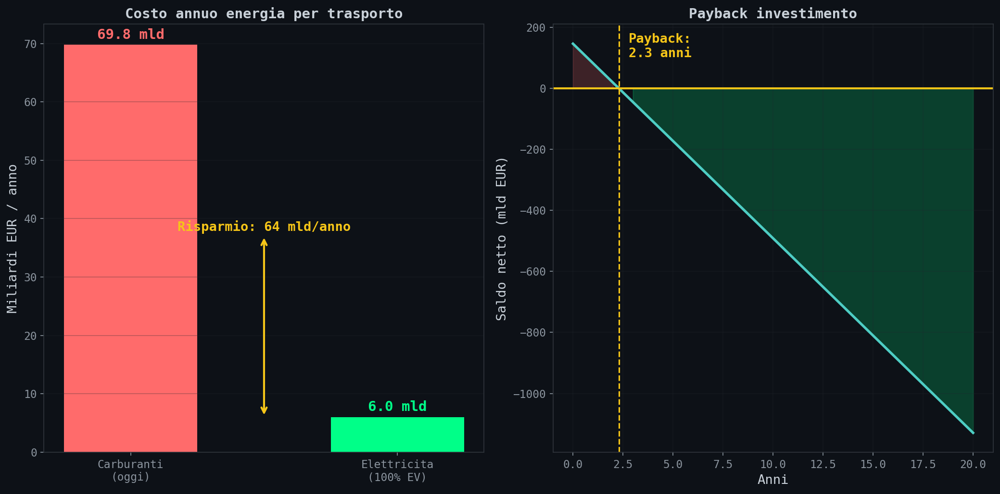
Il paradosso. L'investimento e' enorme (~146 mld), ma il payback e' sorprendentemente rapido: circa 3 anni a prezzo retail. Questo non rende il problema banale. Lo sposta dal costo totale alla capacita' di eseguire un investimento coordinato su scala nazionale. L'investimento e' principalmente CAPEX (infrastruttura upfront), mentre il sistema attuale e' OPEX (costo distribuito nel tempo del carburante). Il passaggio richiede capacita' di investimento concentrata, non solo convenienza economica. Devi costruire 34 GW di fotovoltaico, potenziare mezzo milione di cabine, installare 24 milioni di wallbox, e convincere la gente a farsi dire dalla rete quando caricare l'auto. Tutto contemporaneamente.
// Smart Charging
Sezione 07. L'intelligenza costa meno del rameC'e' un modo per dimezzare il costo della rete. Non potenziare tutto: spostare il carico nel tempo. Se la wallbox aspetta le 2 di notte, il picco serale sparisce e la cabina del quartiere respira.
Il problema diventa un'ottimizzazione pulita:
vincolo: ∫ Pk(t) dt = Ek (l'auto deve essere carica entro le 7:00)
Minimizzi il picco con il vincolo che ogni auto sia carica entro la mattina. E' un LP, si risolve bene, e il picco si dimezza.
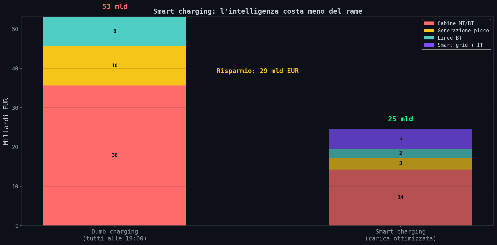
Con smart charging il costo della rete scende da 53 a 25 miliardi. Quasi 30 miliardi di rame risparmiati con il software. Ma ti serve:
- Tariffe dinamiche (il prezzo cambia ogni 15 minuti)
- Protocolli wallbox-rete (ISO 15118, OCPP 2.0)
- Contatori smart di seconda generazione
- E soprattutto: che la gente accetti di non avere il controllo
L'ultimo punto e' il piu' difficile. La razionalita' economica dice di caricare alle 2 di notte. L'ansia da autonomia dice di caricare adesso. L'ansia vince quasi sempre.
// E Se Sbaglio I Parametri?
Sezione 08. Sensitivity analysis: il problema resta in ogni scenarioL'obiezione piu' onesta che mi puoi fare: "hai scelto parametri pessimisti." Ok. Ho fatto girare i numeri con parametri ottimisti, base e pessimisti. Vediamo.
| Parametro | Ottimista | Base | Pessimista |
|---|---|---|---|
| Wallbox | 3.7 kW | 7.4 kW | 11.0 kW |
| kc (contemporaneita') | 0.60 | 0.85 | 0.95 |
| % ricarica pubblica | 20% | 30% | 50% |
Cabina MT/BT: quante auto regge una 400 kVA?
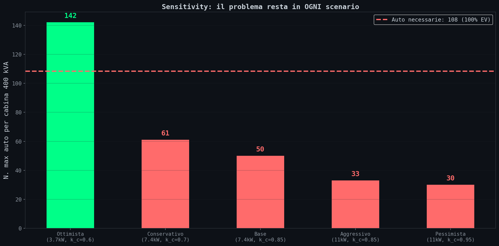
Scenario piu' ottimista (wallbox da 3.7 kW, kc = 0.6): la cabina regge 142 auto, sopra le 108 necessarie. Basta salire a 7.4 kW e sei sotto soglia. E il mercato va verso wallbox piu' potenti, non meno.
Colonnine: ρ resta sopra 1?
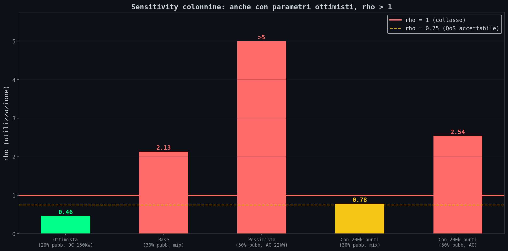
Unico scenario con ρ < 1 sulla rete attuale: 20% di ricarica pubblica e tutte colonnine DC a 150 kW. Irrealistico. Oggi il 74% dei punti e' sotto i 50 kW. In tutti gli altri scenari il sistema collassa.
Risultato. Ho provato a far funzionare i numeri cambiando i parametri. Non funzionano. Il sistema e' in crisi in 4 scenari su 5 per le colonnine e 4 su 5 per le cabine. Il problema non e' nella scelta dei parametri. E' nella scala.
// Fonti e Codice
Sezione 09. Tutto verificabileOgni numero viene da una fonte istituzionale. Zero blog, zero opinioni, zero "si stima che".
| Dato | Valore | Fonte |
|---|---|---|
| Parco auto | 40.3M | ACI, Annuario Statistico 2025 |
| Percorrenza media | 10.231 km/anno | ISTAT, Percorrenze veicoli 2025 |
| Consumo EV | 18 kWh/100km | ENGIE, Sorgenia |
| Fabbisogno elettrico IT | 312.2 TWh/anno | Terna 2024 |
| Picco domanda IT | 57.5 GW | Terna, 18 luglio 2024 |
| Cabine secondarie | 445.144 (e-distr.) / ~524k (totale) | e-distribuzione 2024 |
| Utenze per cabina | ~70 | e-distribuzione 2024 |
| Punti ricarica pubblici | 73.047 | MOTUS-E 2025 |
| Spesa carburanti IT | 69.8 mld EUR/anno | Il Sole 24 Ore 2024 |
| LCOE fotovoltaico IT | 65-80 EUR/MWh | Polimi, Energy & Strategy 2024 |
| Costo cabine MT/BT | 40-120k EUR | Phase S.r.l. 2024 |
| Wallbox domestiche | 700-1.300 EUR | Ingenio 2025 |
| Fattura energetica IT | 48.5 mld EUR/anno | I-Com 2024 |
| Tariffe elettricita' | 0.28 EUR/kWh retail | ARERA 2024 |
| Trasformatori MT/BT | 100/250/400/630 kVA | ABB Guida Tecnica |
Tutto il codice e' nella cartella scripts/litalia-non-ha-la-spina. Cinque script Python, 16 grafici generati. Servono numpy, matplotlib, scipy. Nessuna API key, nessun dato proprietario.
// Conclusione
Fine trasmissioneTorniamo al tizio della cena. Quello con lo studio sul telefono.
Aveva ragione sull'energia: +24%, fattibile. Aveva torto su tutto il resto.
Il suo studio non parlava della cabina del quartiere che regge 50 wallbox su 70 appartamenti. Non parlava del picco di potenza alle 19:00, quando 28 milioni di persone attaccano la spina nello stesso quarto d'ora. Non parlava della frequenza a 50 Hz che vacilla con un RoCoF nell'ordine di ~0.6 Hz/s quando la rampa serale colpisce un sistema con poca inerzia. Non parlava di ρ = 2.13 alle colonnine pubbliche, coda infinita. Non parlava dei 146 miliardi. Non parlava dello spazio fisico in citta' dove non c'e' posto nemmeno per parcheggiare.
E quando ho provato a dargli ragione, cambiando i parametri, wallbox meno potenti, contemporaneita' piu' bassa, meno ricariche pubbliche, il sistema continuava a collassare in 4 scenari su 5.
L'auto elettrica e' il futuro. Su questo zero dubbi. Ma la transizione non e' un interruttore. E' un progetto infrastrutturale della scala di un piano Marshall, che tocca ogni angolo della rete elettrica. Dalla centrale alla presa del tuo garage. Sono 84.6 GW di picco contro i 57.5 attuali. Come aggiungere mezza Italia sopra l'Italia, ma solo tra le 18 e le 21.
Per onesta' intellettuale: esiste uno scenario in cui il sistema regge. Ricarica completamente distribuita nel tempo (smart charging obbligatorio), alta penetrazione di colonnine fast, sovradimensionamento significativo della rete. In questo scenario il picco rientra nei limiti e ρ resta sotto 1.
Ma questo scenario richiede coordinamento centralizzato, investimenti massivi e un cambiamento comportamentale di sistema. Non e' lo stato naturale delle cose. E' un progetto. E il sistema elettrico e' vincolato da infrastrutture con tempi di realizzazione pluriennali, mentre la domanda puo' crescere in mesi. Questo disallineamento tra offerta e carico e' strutturale. Non si risolve "col tempo".
Si puo' fare. Bisogna sapere cosa si sta facendo. Chi dice il contrario ha letto lo studio sbagliato.
Non esiste configurazione del sistema che elimini simultaneamente il fabbisogno energetico, il picco di potenza e la congestione. Ridurre uno sposta il problema sugli altri due. E' un vincolo, non un'opinione.
Fallisce quando troppa potenza viene richiesta
nello stesso punto, nello stesso istante."
Dati: ACI, ISTAT, Terna, e-distribuzione, ARERA, MOTUS-E, ENTSO-E, Polimi. Tutto pubblico, tutto riproducibile.